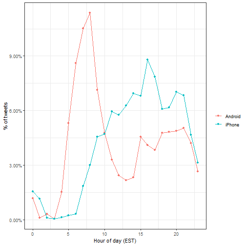

In this project, we analyse Donald Trump's twitter, focusing on the period when he announced his campaign till election date. We will then perform a sentimental analysis and draw insights from the data.
We are going to use the following libraries:
if(!require(tidyverse))
install.packages("tidyverse", repos = "http://cran.us.r-project.org")
if(!require(ggplot2))
install.packages("ggplot2", repos = "http://cran.us.r-project.org")
if(!require(lubridate))
install.packages("lubridate", repos = "http://cran.us.r-project.org")
if(!require(tidyr))
install.packages("tidyr", repos = "http://cran.us.r-project.org")
if(!require(scales))
install.packages("scales", repos = "http://cran.us.r-project.org")
if(!require(dslabs))
install.packages("dslabs", repos = "http://cran.us.r-project.org")
if(!require(tidytext))
install.packages("tidytext", repos = "http://cran.us.r-project.org")
if(!require(textdata))
install.packages("textdata", repos = "http://cran.us.r-project.org")
if(!require(RSentiment))
install.packages("RSentiment", repos = "http://cran.us.r-project.org")
## Warning in library(package, lib.loc = lib.loc, character.only = TRUE,
## logical.return = TRUE, : there is no package called 'RSentiment'
## Warning in install.packages :
## unable to access index for repository https://cran.rstudio.com/src/contrib:
## cannot open URL 'https://cran.rstudio.com/src/contrib/PACKAGES'
## Warning in install.packages :
## unable to access index for repository http://cran.us.r-project.org/src/contrib:
## cannot open URL 'http://cran.us.r-project.org/src/contrib/PACKAGES'
## Warning in install.packages :
## package 'RSentiment' is not available (for R version 3.6.1)
## Warning in install.packages :
## unable to access index for repository http://cran.us.r-project.org/bin/windows/contrib/3.6:
## cannot open URL 'http://cran.us.r-project.org/bin/windows/contrib/3.6/PACKAGES'
Next we shall download and wrangle the data
url <- 'http://www.trumptwitterarchive.com/data/realdonaldtrump/%s.json'
trump_tweets <- map(2009:2017, ~sprintf(url, .x)) %>%
map_df(jsonlite::fromJSON, simplifyDataFrame = TRUE) %>%
filter(!is_retweet & !str_detect(text, '^"')) %>%
mutate(created_at = parse_date_time(created_at,
orders = "a b! d! H!:M!:S! z!* Y!", tz="EST"))
The data is split into 8 columns consisting of
## [1] "source" "id_str"
## [3] "text" "created_at"
## [5] "retweet_count" "in_reply_to_user_id_str"
## [7] "favorite_count" "is_retweet"
Where the first entry is
trump_tweets[1,]
## source id_str
## 1 Twitter Web Client 6971079756
## text
## 1 From Donald Trump: Wishing everyone a wonderful holiday & a happy, healthy, prosperous New Year. Let’s think like champions in 2010!
## created_at retweet_count in_reply_to_user_id_str favorite_count
## 1 2009-12-23 12:38:18 28 <NA> 12
## is_retweet
## 1 FALSE
Here is a view of the first few tweets
trump_tweets %>% select(text) %>% head
## text
## 1 From Donald Trump: Wishing everyone a wonderful holiday & a happy, healthy, prosperous New Year. Let’s think like champions in 2010!
## 2 Trump International Tower in Chicago ranked 6th tallest building in world by Council on Tall Buildings & Urban Habitat http://bit.ly/sqvQq
## 3 Wishing you and yours a very Happy and Bountiful Thanksgiving!
## 4 Donald Trump Partners with TV1 on New Reality Series Entitled, Omarosa's Ultimate Merger: http://tinyurl.com/yk5m3lc
## 5 --Work has begun, ahead of schedule, to build the greatest golf course in history: Trump International – Scotland.
## 6 --From Donald Trump: "Ivanka and Jared’s wedding was spectacular, and they make a beautiful couple. I’m a very proud father."
Source variable tells us the device that was used to compose and upload each tweet
trump_tweets %>% count(source) %>% arrange(desc(n))
## # A tibble: 19 x 2
## source n
## <chr> <int>
## 1 Twitter Web Client 10718
## 2 Twitter for Android 4652
## 3 Twitter for iPhone 3962
## 4 TweetDeck 468
## 5 TwitLonger Beta 288
## 6 Instagram 133
## 7 Media Studio 114
## 8 Facebook 104
## 9 Twitter Ads 96
## 10 Twitter for BlackBerry 78
## 11 Mobile Web (M5) 54
## 12 Twitter for iPad 39
## 13 Twitlonger 22
## 14 Twitter QandA 10
## 15 Vine - Make a Scene 10
## 16 Periscope 7
## 17 Neatly For BlackBerry 10 4
## 18 Twitter for Websites 1
## 19 Twitter Mirror for iPad 1
And if we filter out retweets and focus on the "twitter for ..." entries
trump_tweets %>%
extract(source, "source", "Twitter for (.*)") %>%
count(source)
## # A tibble: 6 x 2
## source n
## <chr> <int>
## 1 Android 4652
## 2 BlackBerry 78
## 3 iPad 39
## 4 iPhone 3962
## 5 Websites 1
## 6 <NA> 12029
Since we are interested on what happened during the campaign, we further wrangle the dataset to focus on what was tweeted between the day Trump announced his campaign and election day from an Android and iPhone
We will use data visualization to explore the possibility that two different groups were tweeting from these devices.
For each tweet, we will extract the hour, in the east coast (EST), it was tweeted then compute the proportion of tweets tweeted at each hour for each device.

We notice a big peak for the Android in early hours of the morning, between 6AM and 8AM. There seems to be a clear difference in these patterns. We will therefore assume that two different entities are using these two devices.
Now we will study how their tweets differ.
For each word we want to know if it is more likely to come from an Android tweet or an iPhone tweet using odds ratio. We will have many proportions that are 0 so we use the 0.5 correction. Given that several of these words are overall low frequency words we can impose a filter based on the total frequency
tweet_words <- campaign_tweets %>%
mutate(text = str_replace_all(text, "https://t.co/[A-Za-z\\d]+|&", "")) %>%
unnest_tokens(word, text, token = "regex", pattern = pattern) %>%
filter(!word %in% stop_words$word &
!str_detect(word, "^\\d+$")) %>%
mutate(word = str_replace(word, "^'", ""))
android_iphone_or <- tweet_words %>%
count(word, source) %>% spread(source, n, fill = 0) %>%
mutate(or = (Android + 0.5) / (sum(Android) - Android + 0.5) /
( (iPhone + 0.5) / (sum(iPhone) - iPhone + 0.5)))
android_iphone_or %>% filter(Android+iPhone > 100) %>% arrange(desc(or))
## # A tibble: 30 x 4
## word Android iPhone or
## <chr> <dbl> <dbl> <dbl>
## 1 @cnn 104 18 4.95
## 2 bad 104 26 3.45
## 3 crooked 157 49 2.79
## 4 ted 85 28 2.62
## 5 interviewed 76 25 2.62
## 6 media 77 26 2.56
## 7 cruz 116 46 2.19
## 8 hillary 290 119 2.14
## 9 win 74 30 2.14
## 10 president 84 35 2.08
## # ... with 20 more rows
android_iphone_or %>% filter(Android+iPhone > 100) %>% arrange(or)
## # A tibble: 30 x 4
## word Android iPhone or
## <chr> <dbl> <dbl> <dbl>
## 1 #makeamericagreatagain 0 296 0.00144
## 2 #trump2016 3 412 0.00718
## 3 join 1 157 0.00821
## 4 tomorrow 25 101 0.218
## 5 vote 46 67 0.600
## 6 america 114 141 0.703
## 7 tonight 71 84 0.737
## 8 iowa 62 65 0.831
## 9 poll 117 103 0.990
## 10 trump 112 92 1.06
## # ... with 20 more rows
We already see somewhat of a pattern in the types of words that are being tweeted more in one device versus the other. We are not interested in specific words but rather in the tone.
Vaziri's assertion is that the Android tweets are more hyperbolic. So how can we check this with data? Hyperbolic is a hard sentiment to extract from words as it relies on interpreting phrases. However, words can be associated to more basic sentiment such as anger, fear, joy and surprise.
In the next section we demonstrate basic sentiment analysis.
For the analysis here, we are interested in exploring the different sentiments of each tweet, so we will use the nrc lexicon: